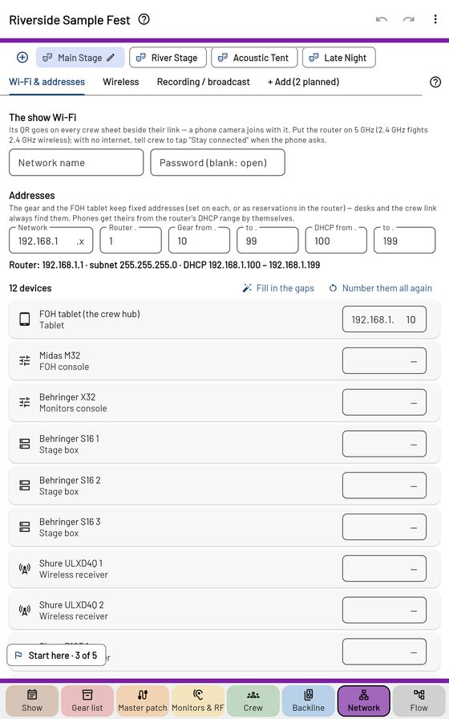

Network, desks and Flow

Wi-Fi & addresses
The show Wi-Fi's name and password (a QR for it goes on the crew sheets) and a plan of fixed addresses for the FOH tablet, desks, stage boxes and receivers — Fill in the gaps or Number them all again.
Desks
A tab per desk; + Add → Find or type a desk. Push to desk sends names (and colours) to Behringer X32 / Midas M32, Wing, Allen & Heath dLive / Avantis (with Send 48V) and Yamaha; DiGiCo SD / Quantum and the Midas PRO2 are in early testing. Put the desk back undoes a push. For a desk off the network: a Director CSV (A&H) or a CL Editor folder (Yamaha). Only the X32 has been tried on a real desk so far — the app keeps a desk test log that goes with your feedback.
Wireless and recording
Shure receivers on the network are found and their channels linked; recording and broadcast feeds have their own tab, with a track sheet.
Flow
The last page draws the signal flow from the stage to the desks — boxes, splits, guest desks — for the house or one act, with a Signal flow PDF. It starts from the master patch.